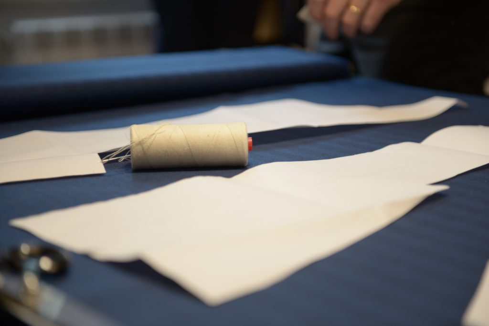

Accessories
We create ties, pocket squares, glasses cases, bow-tie, many kind of different foulards, customised tailored or already made, for your work, your free time and for special occasions like ceremonies or night gala, always tailored with the classic techniques of the Italian handmade. Also the accessories are produced crafted and made with the finest Italian fabrics. Our ties can be lined or unlined, and 5 or 7 fold ties.